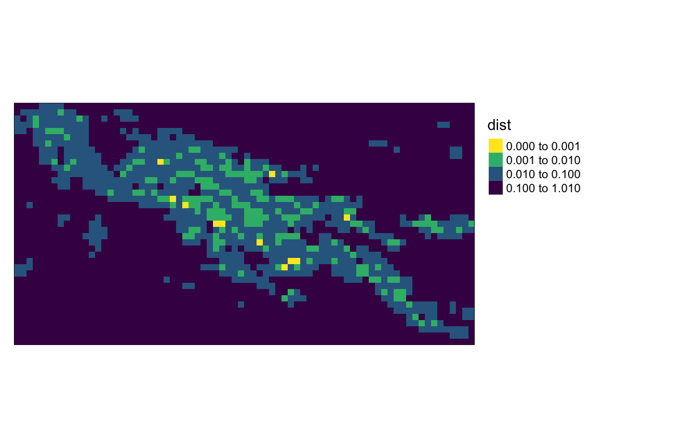
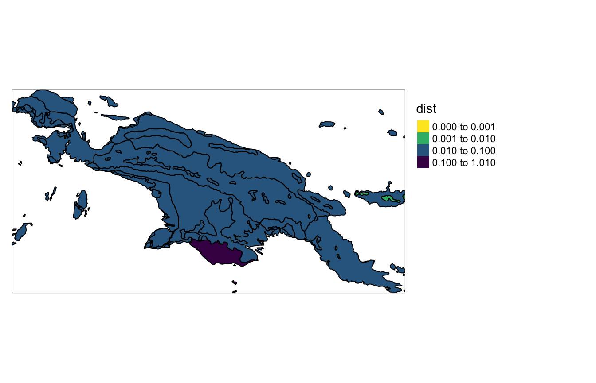

The pattern-based spatial analysis makes it possible to search for areas with similar spatial patterns. This vignette shows how to do spatial patterns’ search on example datasets. Let’s start by attaching neccesary packages:
library(motif) library(stars) #> Loading required package: abind #> Loading required package: sf #> Linking to GEOS 3.8.1, GDAL 2.4.4, PROJ 7.0.0 library(sf) library(tmap)
Spatial patterns’ search requires having two spatial objects. The first one is the area of interest, and the second one is a larger area that we want to search in. For this vignette, we will read the "raster/landcover2015.tif" file, and crop our area of interest using coordinates of its borders.
landcover = read_stars(system.file("raster/landcover2015.tif", package = "motif")) ext = st_bbox(c(xmin = 238000, xmax = 268000, ymin = -819814, ymax = -789814), crs = st_crs(landcover)) landcover_ext = landcover[ext]
The landcover_ext represents area mostly covered by forest with some agriculture.

We want to compare it to the land cover dataset of New Guinea - landcover.

Regular local landscapes
Spatial patterns’ search is done by the lsp_search() function. It expects an area of interest as the first object and the larger area as the second one. We should provide the type of signature (type) and the suitable distance function (dist_fun) we want to use to compare two datasets. Additional arguments include the size of the search window from the larger area (window) and how much of NA values we can accept in the local landscapes (threshold).
search_1 = lsp_search(landcover_ext, landcover, type = "cove", dist_fun = "jensen-shannon", window = 100, threshold = 1) #> Metric: 'jensen-shannon' using unit: 'log2'. search_1 #> stars object with 2 dimensions and 3 attributes #> attribute(s): #> id na_prop dist #> Min. : 1.0 Min. :0.0000 Min. :0.000186 #> 1st Qu.: 722.2 1st Qu.:0.0022 1st Qu.:0.053816 #> Median :1443.5 Median :1.0000 Median :0.500000 #> Mean :1443.5 Mean :0.6749 Mean :0.335244 #> 3rd Qu.:2164.8 3rd Qu.:1.0000 3rd Qu.:0.500000 #> Max. :2886.0 Max. :1.0000 Max. :1.000000 #> dimension(s): #> from to offset delta refsys point values #> x 1 74 -1091676 30000 PROJCS["unnamed",GEOGCS["... NA NULL [x] #> y 1 39 -38556.5 -30000 PROJCS["unnamed",GEOGCS["... NA NULL [y]
The result of the lsp_search() function is a stars object with three attributes: id - unique value for each local landscape, na_prop - proportion (0-1) of NA values in each local landscapes, and dist - the distance between our area of interest and each local landscape.
We can visualize the results, using for example the tmap package:
my_breaks = c(0, 0.001, 0.01, 0.1, 1.01) tm_shape(search_1) + tm_raster("dist", breaks = my_breaks, palette = "-viridis") + tm_layout(legend.outside = TRUE)

It is now possible to see that there is one yellow area (it is almost the same as our area of interest), but also several yellowish areas that are similar to landcover_ext.
Irregular local landscapes
Search is also possible in irregular local landscapes, based on polygon data. ecoregions.gpkg contains terrestrial ecoregions for New Guinea from https://ecoregions2017.appspot.com/.
ecoregions = read_sf(system.file("vector/ecoregions.gpkg", package = "motif"))

The lsp_search() function works very similarly to the previous case - we just need to provide our ecoregions in the window argument.
search_2 = lsp_search(landcover_ext, landcover, type = "cove", dist_fun = "jensen-shannon", window = ecoregions["id"], threshold = 1) #> Metric: 'jensen-shannon' using unit: 'log2'. search_2 #> stars object with 2 dimensions and 3 attributes #> attribute(s), summary of first 1e+05 cells: #> id na_prop dist #> Min. :21 Min. :0.01 Min. :0.02 #> 1st Qu.:21 1st Qu.:0.01 1st Qu.:0.02 #> Median :21 Median :0.01 Median :0.02 #> Mean :21 Mean :0.01 Mean :0.02 #> 3rd Qu.:21 3rd Qu.:0.01 3rd Qu.:0.02 #> Max. :21 Max. :0.01 Max. :0.02 #> NA's :98383 NA's :98383 NA's :98383 #> dimension(s): #> from to offset delta refsys point values #> x 1 7360 -1091676 300 PROJCS["unnamed",GEOGCS["... FALSE NULL [x] #> y 1 3812 -38556.5 -300 PROJCS["unnamed",GEOGCS["... FALSE NULL [y]
Let’s vizualize the output:
my_breaks = c(0, 0.001, 0.01, 0.1, 1.01) tm_shape(search_2) + tm_raster("dist", breaks = my_breaks, palette = "-viridis") + tm_shape(ecoregions) + tm_borders(col = "black") + tm_layout(legend.outside = TRUE)

This search shows that most of the polygons are fairly different from our area of interest. Only one of them has a relatively small distance of about 0.007.
min(search_2$dist, na.rm = TRUE) #> [1] 0.006851394
landcover_mindist2 = landcover[subset(ecoregions, id == 10)]
landcover_mindist2 = droplevels(landcover_mindist2) plot(landcover_mindist2, main = NULL)